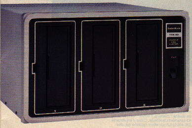
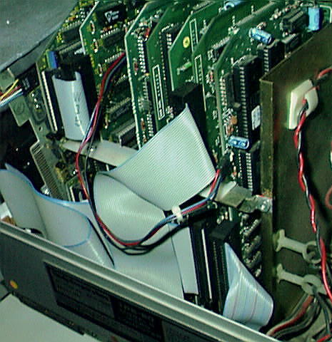
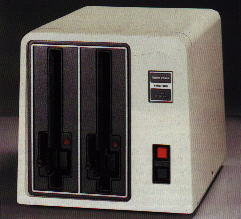
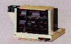
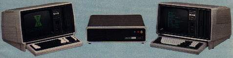

The TRS-80 Model II family hardware list

Model II disk expansion unit
Model II
- 26-4001 TRS-80 Model II, 32K ram, 1 disk drive
- 26-4002 TRS-80 Model II, 64K ram, 1 disk drive
- 26-4102 32KB memory expansion for 26-4001
- 26-4160 Model II disk expansion unit, 1 drive
- 26-4161 Model II disk expansion unit, 2 drives
- 26-4162 Model II disk expansion unit, 3 drives
- 26-4163 second or third drive for Model II disk expansion unit, (drive only)
- 26-4164 second or third drive for Model II disk expansion unit, (kit where first drive has light)

Model II card cage with Model 16 expansion set (the two cards on the left) and a hard disk controller added
Model 16
- 26-6001 TRS-80 Model 16, 128K, 1 disk drive
- 26-6002 TRS-80 Model 16, 128K, 2 disk drives
- 26-6006 TRS-80 Model 16B, 256K, 1 floppy drive, 1 internal 15MB hard disk
- 26-6105 TRSDOS-16 replacement disk
- 26-6040 Model 16 manuals replacement set
- 26-6011 Model 16 128K memory board
- 26-6012 128K memory kit for adding to 26-6011
- 26-6013 3-user RS232 card for Model 16B


Model 12 external floppy drives and Model 12 card cage
Model 12
- 26-4004 TRS-80 Model 12, 80K, 1 disk drive
- 26-4005 TRS-80 Model 12, 80K, 2 disk drives
- 26-4912 TRSDOS 4.2 replacement diskette for Model 12 or 16
- 26-4910 TRSDOS 2.0 replacement diskette for Model II, 12 or 16
- 26-6017 Model 12 card cage

Model 16, 8 meg hard disk, Model II
Options
- 26-4104 640x240 graphics option for model II/12/16
- 26-4105 64K memory expansion for Model II/12 for use by Visicalc
- 26-4150 8MB hard disk, primary unit
- 26-4151 8MB hard disk, secondary unit
- 26-4152 12MB hard disk, primary unit
- 26-4153 12MB hard disk, secondary unit
- 26-4154 15MB internal hard disk kit for Model 12
- 26-4155 15MB external hard disk, primary drive
- 26-4156 15MB external hard disk, secondary drive
- 26-4157 Model II/12 installation kit for 26-4155
- 26-4171 35MB hard disk, primary unit
- 26-4172 35MB hard disk, secondary unit
- 26-4173 70MB hard disk, primary unit
- 26-4174 70MB hard disk, secondary unit
- 26-4165 external model 16/12 thin-line floppy expansion unit, 1 drive
- 26-4166 external model 16/12 thin-line floppy expansion unit, 2 drives
- 26-4167 second internal floppy drive for 1-drive model 16 or 12 or for 26-4165
- 26-6050 DT-1 terminal
- 26-6010 Model II/12 upgrade kit to model 16
 Model II/12/16 Graphics board with cables and software
Model II/12/16 Graphics board with cables and software
Arcnet
- 26-6501 Arcnet board
- 26-6502 Arcnet software
- 26-6508 Active hub
- 26-6504 Passive hub
- 26-6503 16K Z80 memory expansion board for Model II not previously used with hard disk
- 26-6510 arcnet cable, 20ft
- 26-6511 arcnet cable, 50ft
- 26-6512 arcnet cable, 100ft
- 26-6513 arcnet cable, bulk (278-104 BNC fitting needed)
This list is not complete yet, the Model 6000 information is missing.
Back to Model II page